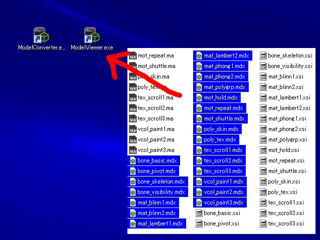

Sce.PlayStation.HighLevel.Model は基本的なモデル表示の機能を提供します。
Contents
BasicModelは基本的なモデルデータを表すクラスであり、モデルデータが格納されたファイルをロードして作成します。
BasicModelにはワールド行列設定、カレントモーション設定、アニメーション計算、行列計算、グラフィクス描画などのAPIがあり、それらを呼び出すことでモデルを表示することができます。
モデルファイルの拡張子は .mdx であり、FBX XSI X COLLADA などの一般的なモデルデータから変換されたバイナリ形式です。 モデルファイルには階層構造、形状データ、マテリアル、テクスチャ、アニメーションなどの情報が格納されています。
BasicProgramは基本的なシェーダープログラムを表すクラスであり、ライティング、フォグ、スキニングなど基本的な効果を適用することができます。
BasicProgramには行列、マテリアル、ライト、フォグ、描画モードなどのパラメータがあり、それらを設定することでシェーダー機能を制御することができます。
シェーダーファイルは設定されたパラメータに応じて自動的にロードされます。そのため、BasicProgramが必要とするすべてのシェーダーファイルをアプリケーションのディレクトリにコピーしておく必要があります。
BasicParametersはBasicProgramのパラメータを管理するクラスであり、上述のパラメータはこのクラスに格納されています。
BasicProgramは一つのBasicParametersを持ちますが、必要ならば、複数のBasicProgramが一つのBasicParametersを共有することもできます。これはカメラやライトなどグローバルなパラメータの設定に便利です。
BasicProgramContainerはロードずみのプログラムを管理するクラスであり、文字列をキーとする辞書にプログラムを登録することができます。
モデルをロードした後、このクラスを使用してプログラムをモデルに関連づけます。 それにより、キー文字列に応じて適切なプログラムをモデルに適用することができ、またロードずみのプログラムを複数のモデルが共有することができます。
BasicTextureContainerはロードずみのテクスチャを管理するクラスであり、文字列をキーとする辞書にテクスチャを登録することができます。
モデルをロードした後、このクラスを使用してテクスチャをモデルに関連づけます。 それにより、キー文字列に応じて適切なテクスチャをモデルに適用することができ、またロードずみのテクスチャを複数のモデルが共有することができます。
ModelConverter と ModelViewer は、以下のフォルダーにあります。
%SCE_PSM_SDK%/tools/ModelConverter
ModelConverter と ModelViewer のショートカットをデスクトップに作成してください。
ModelConverter に入力ファイルをドラッグ＆ドロップすると、同じフォルダーに出力ファイルが作成されます。
ModelViewer に出力ファイルをドラッグ＆ドロップすると、モデルデータを表示することができます。

モデルを変換するとき、もし存在すれば、テクスチャの画像ファイルが読み込まれ、出力ファイルに格納されます。
画像ファイルは、入力モデルファイルの中で記述されたテクスチャファイル名のフォルダーだけでなく、入力モデルファイルが存在するフォルダーからも検索されます。画像ファイル拡張子は、入力モデルファイルの中で指定されたテクスチャファイル名の拡張子にかかわらず、PNG, JPG, BMP, GIF など利用可能な拡張子から自動的に選択されます。
コントロールキーを押しながらドラッグ＆ドロップすると、プロンプトが表示されキー入力が可能になります。
そこで、以下のようなオプションを指定することができます。
以下のファイル形式が利用可能です。
テストデータは、以下のフォルダーにあります。
%SCE_PSM_SDK%/tools/ModelConverter/testdata
変換可能なモデルパラメータは、以下のとおりです。
"Maya ASCII" と書かれたパラメータは、同じフォルダーにある Maya ASCII ファイルから取得することができます。